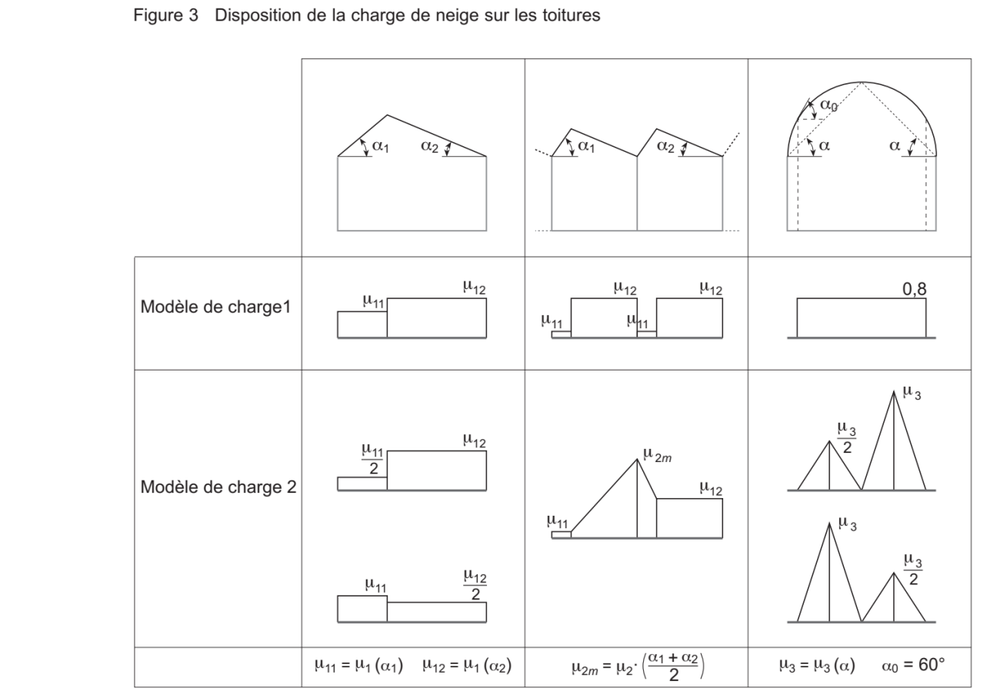
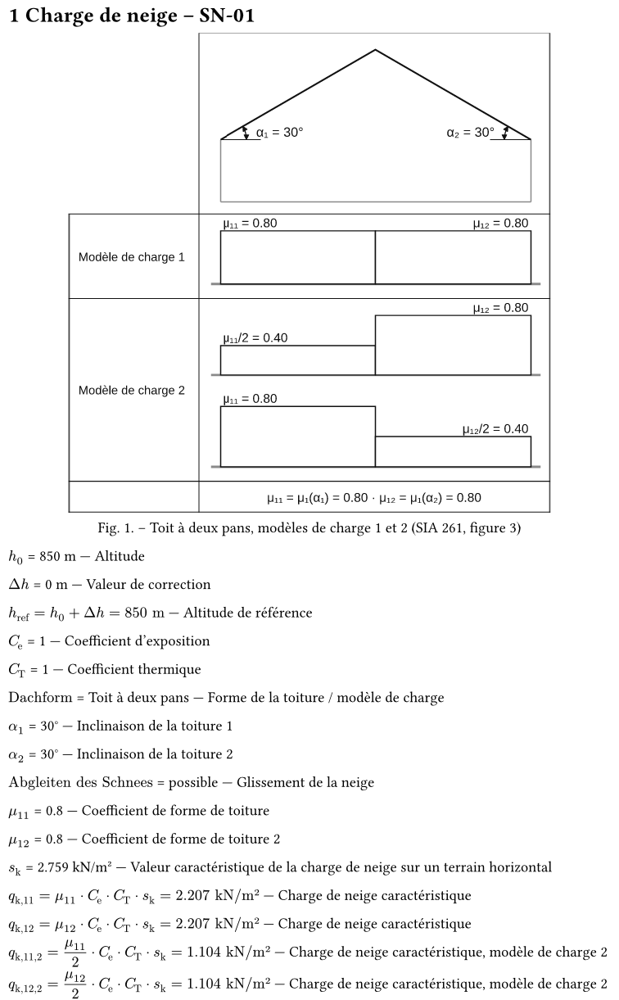
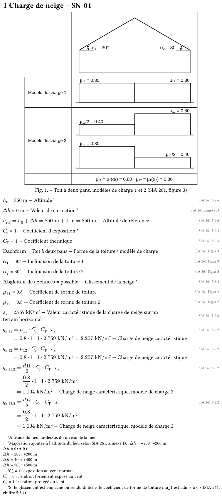

Le mode Affichage refait d'après votre description : au centre, le fichier .typ de la toiture tel que le moteur de Woodcore 0.122 l'imprime ; à droite, le niveau 1, 2 ou 3 du domaine, puis chaque élément du fichier, réglable un par un. Le mode Calcul reste celui de la version 3. Les trois artefacts précédents restent tels quels.
#include domain-file("snow-load", "SN-01"). Le cas est écrit dans son fichier ; show-calc n'existe plus depuis la 0.121.#var display, style, label-position, descr-position, norm-position, level ; pour #eq aussi equation, unit, as-unit, display-formula, display-equation, role, label, descr ; pour la figure caption et width.Les cinq toitures dessinées par le même code que le module « Disposition », avec leurs valeurs pour h0 = 850 m. Noir sur blanc, la structure dessous, les modèles 1 et 2 en lignes comme dans la norme. La figure 3 de la SIA 261 ne dessine que trois colonnes (deux pans, sheds, cylindrique) : le toit plat et le toit à un pan sont dessinés dans le même style, d'après 5.3.2 et 5.3.5.

| Geste | Sur | Ce qui se passe |
|---|---|---|
| Survol (≈ 350 ms) | un i, un pictogramme de toit, une référence en bleu | La bulle montre la clause : son texte mot pour mot, puis dessous son extrait découpé dans la norme ou sa figure. Pas d'onglets. Une toiture ne montre que l'extrait. Elle reste ouverte tant que la souris est sur le déclencheur ou sur la bulle. |
| Clic | le même | L'extrait devient un module du volet droit, sous l'état du calcul. Un second clic sur le même ne le double pas. |
| Ctrl+clic | le même | Le lecteur PDF de Woodcore ouvre le chapitre 5 entier, à la page, la clause encadrée. Pour Δh, c'est la carte de la neige de 261.sia.ch qui s'ouvre (?lang=fr&layer=snow). |
| Glisser l'en-tête | un module | Le module change de place. L'ordre est retenu pour l'onglet. |
| ▾ / ▸ | un module | Réduit le module à sa ligne d'en-tête, avec un résumé (« ✓ complet · 1 info », « qk,11 = 2.21 kN/m² »). Réduits, ils se réordonnent facilement. |
| ⧉ | un module | Une fenêtre Woodcore minimale avec ce module ; il reste aussi dans le volet. Ctrl+molette zoome, la fenêtre se déplace et se redimensionne. |
| × | un extrait épinglé | Le désépingle. L'état du calcul, les résultats et la disposition ne se ferment pas, ils se réduisent. |
| Clic | un message de l'état du calcul | Va au champ concerné et le fait clignoter. |
Le calcul fait déjà les deux modèles. snow_source calcule les modèles de charge 1 et 2 pour le toit à un pan, à deux pans, en sheds et cylindrique, et un seul pour le toit plat. Ce que vous demandez est donc tenu ; le prototype le montre et le dessine.
Les noms français de la norme. La SIA 261 dit « toiture en sheds » (tableaux 42 et 43) et « toits en forme semi-cylindrique » (tableau 64). Le glossaire de Woodcore a déjà « Toiture en sheds » et « Toiture cylindrique ». Le prototype utilise les mots du glossaire.
h0 n'est pas le même mot partout. L'équation (10) écrit h0 pour l'altitude de référence (« L'altitude de référence h0 (en m) peut être déterminée selon l'annexe D »), et la légende de l'annexe D écrit h0 = altitude. Woodcore appelle h0 l'altitude du lieu et href = h0 + Δh celle qui entre dans (10). Le calcul est juste ; le module des résultats le dit en clair, mais l'extrait de la norme montre h0 là où Woodcore écrit href.
Le français et l'allemand ne disent pas tout à fait la même chose. FR : « peut être déterminée selon l'annexe D » ; DE : « ist gemäss Anhang D zu ermitteln » (doit). L'info-bulle montre chaque édition telle quelle, sans harmoniser.
Pas d'édition anglaise. Le dépôt des normes a SIA 261:2020 en allemand et en français. En anglais, la bulle montre l'allemand avec la mention « édition allemande ». En allemand, l'allemand ; en français, le français.
| Quoi | Où | Coût, ce qu'il faut décider |
|---|---|---|
| Où se trouve chaque extrait | calc/norms/sia261-2020-5.2-schnee.json : à côté de chaque norm_ref, par édition, le fichier, la page et le rectangle | Relevé une fois sur les PDF (c'est fait pour ce prototype : 14 clauses et figures, en FR et DE). Une seule source : le calcul et la bulle lisent la même entrée. |
| Le texte mot pour mot | le même fichier, ou lu dans le PDF à la volée (pypdf, déjà une dépendance) | Lu à la volée, il ne peut pas vieillir, mais l'extraction perd les μ (police de symboles) : ils doivent être rétablis. Recopié dans le fichier, il est exact mais c'est une copie. |
| Les PDF | votre dépôt norms, trouvé par WOODCORE_NORMS_LIBRARY | Sans bibliothèque, la bulle montre la clause et le texte, sans image, sans erreur. |
| La règle « le rapport ne reproduit pas la norme » | docs/architecture/reference-library.md §11bis et docs/decisions.md | Vous levez cette limite : la décision est à écrire (afficher, découper, imprimer la norme est permis). |
| Le volet de modules | un composant de calc/tools/, commun aux onglets de calcul | Écrit une fois, repris par le vent, les charges permanentes, les vérifications. L'ordre et l'état réduit sont retenus par onglet, comme la largeur des volets aujourd'hui. |
| La fenêtre minimale | idem | Elle suit le cas affiché et se ferme avec le projet. |
| Ctrl+clic vers la norme | le lecteur PDF de Woodcore (pdf_pane, déjà utilisé par les annexes) | Il sait aller à une page et encadrer un rectangle ; un lecteur externe ne va pas toujours à la page demandée. |
| Ce libre | schemas/snow-source 1.3, snow_source.check_fields | Nouveau contrat de données : le fichier garde l'exposition choisie ou une valeur. Pas de message dans Woodcore. Le rapport imprime alors la valeur seule, sans les mots de 5.2.4. |
| Figure 3 dessinée | calc/domains/snow_svg.py, Qt-free | Remplace le croquis actuel ; mots des glossaires (« Modèle de charge 1 ») en trois langues. Dans le rapport, la colonne de la toiture (toit, modèles 1 et 2), à partir du niveau 3 : le SVG est écrit à l'export, et la figure en tête du fichier .typ du cas, comme les dessins d'une charge permanente. |
| Corniche (5.3.7) | snow_source | Au-dessus de 800 m, le message orange reste dans l'état du calcul. La ligne « Corniche = à prendre en considération » et sa note sortent du rapport : snow_source n'écrit plus la variable schneeueberhang. |
| États rouge / orange / vert | snow_source.warnings rend le champ et la sorte de chaque message | Les mots en de/fr/en dans les tables de l'onglet. Le message des 2000 m perd « calculé quand même ». |
Tout cela passe par big-feature une fois vos réponses données : plusieurs modules, un schéma et une décision changent.
Dans Woodcore 0.122, un cas de neige est écrit dans son propre fichier, Variable-loads/Snow/SN-01.typ : un #domain, puis une ligne #var ou #eq par valeur. Une section du rapport l'appelle par #include domain-file("snow-load", "SN-01"). J'avais encore écrit show-calc et val, retirés en 0.121 ; ce prototype part du vrai fichier, écrit pour la toiture principale par le générateur de Woodcore (unfold._generate_load), puis compilé par son moteur.
| Où | Ce qu'on y voit, ce qu'on y fait |
|---|---|
| Au centre | Le fichier tel que Typst l'imprime, chaque élément dans son ordre : le titre du domaine, la figure, puis les lignes. Ce qui est masqué (niveau 0, display: none, ou la figure sous son niveau) reste visible en pâle, avec « masquée ». Pas de cadre, pas de clic : l'aperçu ne sert qu'à lire. La ligne ouverte à droite est seulement teintée. Ctrl+molette zoome. |
| À droite, en haut | Le fichier, la commande à copier dans la section, et le niveau de détail 1, 2 ou 3 : celui du domaine, #domain(…, level: 2). |
| À droite, « Éléments du fichier » | Une section de la même carte, pas un autre module : chaque élément avec sa commande (figure, var, eq), son symbole, son libellé et son niveau 0 1 2 3. Le niveau du domaine est en pointillé tant que la ligne n'a pas le sien ; un clic le fixe, un second clic le rend au domaine. |
| Un clic sur une ligne | Ses arguments s'ouvrent dessous, en listes déroulantes, et en champs de texte pour ce qui s'écrit. La ligne écrite dans le fichier suit, les arguments ajoutés surlignés. « Voir le fichier entier » montre le .typ avec tous les réglages. |
Lus dans lib/formula.typ de Woodcore 0.122. Le nom, la valeur et l'unité d'un #var sont ceux de l'export : ils ne se règlent pas ici.
| Commande | Arguments | Valeurs |
|---|---|---|
#var | display | none, variable, value, value-unit, variable-value-unit |
| style | normal, bold, underline, double | |
| label-position | none, before, after, footnote | |
| descr-position | none, after, footnote | |
| norm-position | none, in-line, line-right, footnote | |
| level | auto (celui du domaine), 0, 1, 2, 3 | |
#eq | equation, unit, as-unit | la formule ; l'unité de la réponse, convertie ; ou l'unité donnée sans conversion |
| display-formula, display-equation | none, variable, value, value-unit, variable-value-unit | |
| style, role | normal, bold, underline, double ; data, compute, result | |
| label, label-position, descr, descr-position, norm-position, level | comme #var, plus le libellé et la description à écrire | |
#verify | display, role, label, label-position, descr-position, norm-position, level | display : none, variable, value-unit, variable-value-unit. Un fichier de neige n'en a pas ; les onglets des vérifications prendront le même panneau. |
| figure | caption, width | la légende ; la largeur, 40 à 100 % |
Le fichier entier, compilé avec #include domain-file("snow-load", "SN-01"), au niveau 2 et au niveau 3, sans réglage. La figure est en tête du fichier, comme le générateur écrit les dessins d'une charge permanente. Elle s'imprime ici à tous les niveaux : #figure n'a pas de niveau (question 1).


sk n'a plus sa formule. Le générateur l'écrit en valeur, #var("s_k", 2.759184, "kN/m²", …) : l'équation (10) de 5.2.6 n'est plus imprimée, à aucun niveau. Avant la 0.121, le niveau 3 la montrait.
De l'allemand dans le fichier français. Les clauses norm-section: "Figur 3", "Figur 2" et "Anhang D" ; les symboles « Dachform » et « Abgleiten des Schnees » ; la note du glissement écrit encore « mu_1 ».
La corniche est encore écrite. Le générateur écrit la ligne schneeueberhang ; le prototype l'a retirée, selon votre décision.
| Sujet | Décision |
|---|---|
| L'Affichage | Le niveau 1, 2 ou 3, puis la liste des éléments du fichier avec 0 1 2 3, et les arguments de chaque ligne à son clic. Plus de variantes A à E. |
| L'aperçu | Toutes les commandes de neige du fichier, masquées comprises ; rien n'y est cliquable. |
| Longueur et largeur | Gardées : pour un toit plat, elles donnent μ1 selon la figure 4 (majoration pour les bâtiments de grandes dimensions, sur le maximum de L et B quand les deux dépassent 20 m, 5.3.5). snow_source et le mode Calcul le font déjà. |
| La figure 3 du rapport | À partir du niveau 3. |
| Celles du 22.10.2026 | Bulle : le texte puis l'image ; Ctrl+clic dans le lecteur PDF de Woodcore ; Ce libre sans message ; corniche en orange dans Woodcore et hors du rapport ; modules glissés-déposés ; cartes 261.sia.ch ?lang=fr&layer=snow et layer=wind. |
L'option recommandée est la première.
#figure est la commande de Typst et n'en a pas.#calc-figure(image, caption:, width:, level: 3) : la figure se règle comme une ligne, et le 0 1 2 3 de sa ligne veut dire « à partir de ce niveau »#figure d'un test du niveau du domaine, sans commande nouvelle#eq avec l'équation (10), pour que le niveau 3 la montre de nouveau